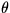
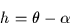
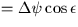

Next: Refraction
Up: EXPLANATION AND EXAMPLES
Previous: Mean Place to Apparent Place
The observed place of a source is its position as
seen by a perfect theodolite at the location of the
observer. Transformation of an apparent ![$[\,\alpha,\delta\,]$](img3.gif) to observed
place involves the following effects:
to observed
place involves the following effects:
- to
![$[\,h,\delta\,]$](img29.gif) .
. - Diurnal aberration.
- to
![$[\,Az,El~]$](img28.gif) .
. - Refraction.
The transformation from apparent to
apparent is made by allowing for
Earth rotation through the sidereal time, :

For this equation to work,  must be the apparent right
ascension for the time of observation, and must be
the local apparent sidereal time. The latter is obtained
as follows:
must be the apparent right
ascension for the time of observation, and must be
the local apparent sidereal time. The latter is obtained
as follows:
- 1.
- from civil time obtain the coordinated universal time, UTC
(more later on this);
- 2.
- add the UT1-UTC (typically a few tenths of a second) to
give the UT;
- 3.
- from the UT compute the Greenwich mean sidereal time (using
sla_GMST);
- 4.
- add the observer's (east) longitude, giving the local mean
sidereal time;
- 5.
- add the equation of the equinoxes (using
sla_EQEQX).
The equation of the equinoxes ( plus
small terms)
is the effect of nutation on the sidereal time.
Its value is typically a second or less. It is
interesting to note that if the object of the exercise is to
transform a mean place all the way into an observed place (very
often the case),
then the equation of the
equinoxes and the longitude component of nutation can both be
omitted, removing a great deal of computation. However, SLALIB
follows the normal convention and works via the apparent place.
Note that for very precise work the observer's longitude should
be corrected for polar motion. This can be done with
sla_POLMO.
The corrections are always less than about
 , and
are futile unless the position of the observer's telescope is known
to better than a few metres.
, and
are futile unless the position of the observer's telescope is known
to better than a few metres.
Tables of observed and
predicted UT1-UTC corrections and polar motion data
are published every few weeks by the International Earth Rotation Service.
The transformation from apparent to topocentric
consists of allowing for
diurnal aberration. This effect, maximum amplitude
 ,
was described earlier. There is no specific SLALIB routine
for computing the diurnal aberration,
though the routines
sla_AOP etc. include it, and the required velocity vector can be
determined by calling
sla_GEOC.
,
was described earlier. There is no specific SLALIB routine
for computing the diurnal aberration,
though the routines
sla_AOP etc. include it, and the required velocity vector can be
determined by calling
sla_GEOC.
The next stage is the major coordinate rotation from local equatorial
coordinates into horizon coordinates. The SLALIB routines
sla_E2H
etc. can be used for this. For high-precision
applications the mean geodetic latitude should be corrected for polar
motion.
Next: Refraction
Up: EXPLANATION AND EXAMPLES
Previous: Mean Place to Apparent Place
SLALIB --- Positional Astronomy Library
Starlink User Note 67
P. T. Wallace
12 October 1999
E-mail:ptw@star.rl.ac.uk